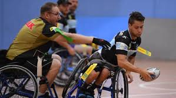

Rugby en silla de ruedas. El Rugby en silla de ruedas es un deporte de equipo para deportistas discapacitados. Desarrollado en Canadá a finales de la década de 1970, actualmente se practica en alrededor de veinte países y es, además, un deporte paralímpico. El nombre original del deporte era "murderball" (balón asesino). Todos los jugadores de Rugby en silla de ruedas son lesionados medulares y es así como las reglas de este juego requieren que los deportistas que lo practican tengan una discapacidad que afecte total o parcialmente ambas extremidades inferiores y superiores. Es un deporte mixto, con hombres y mujeres compitiendo en el mismo equipo. El rugby en silla de ruedas se juega bajo techo, sobre una superficie (cancha) de madera.
© Página realizada por M.L.S. en 2018.